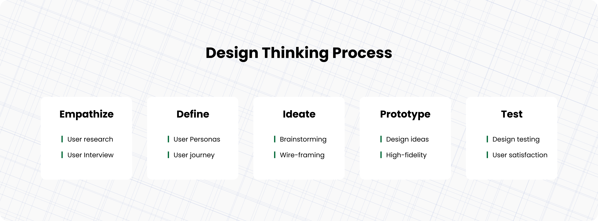
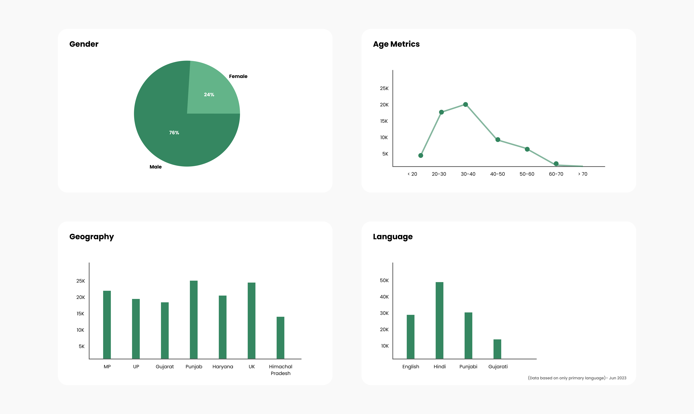
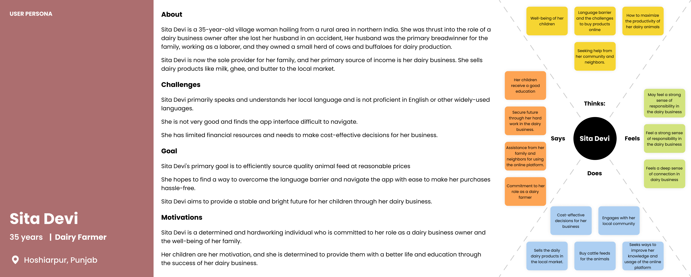
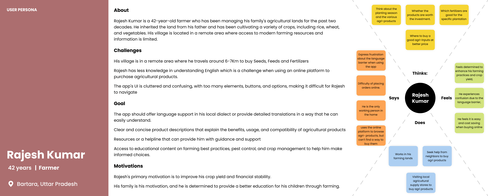
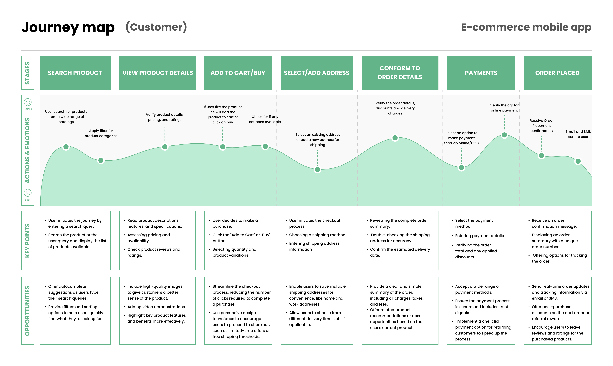
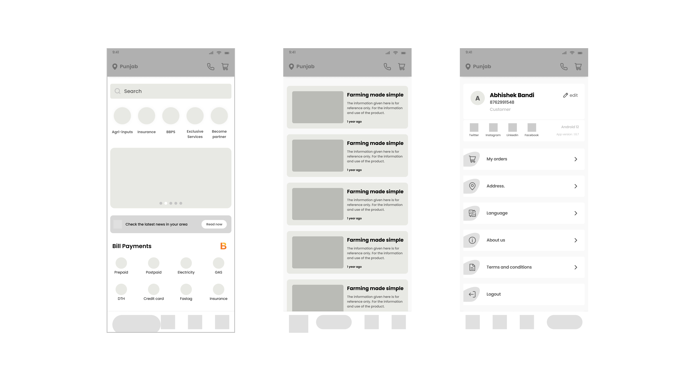
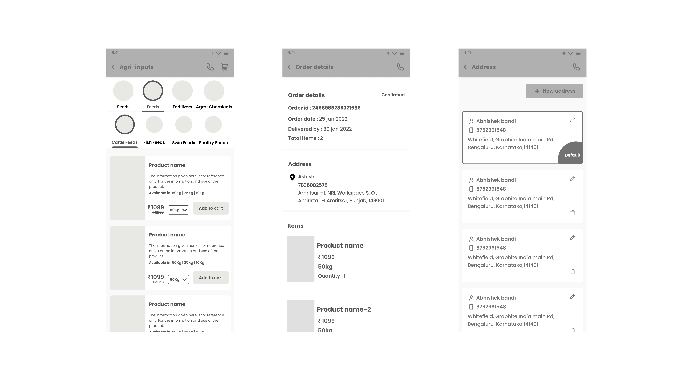
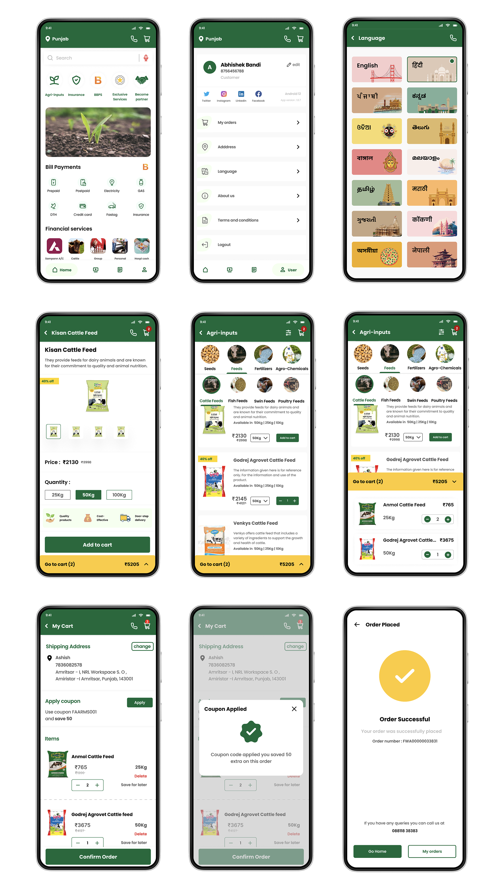

Agri Tech (E-com) Mobile App
An e-commerce mobile app redesign connecting farmers across 7+ Indian states with agricultural products — built for low digital literacy, multilingual needs, and high trust requirements.

Role
UI / UX Design
Timeline
Mar – Jun 2022
Tools
Figma, Adobe Illustrator, FigJam
Platform
iOS & Android
My Contribution
Roles & Responsibilities
An industry project focused on redesigning an agricultural e-commerce mobile app to serve farmers across 7+ Indian states — addressing poor usability, absent design guidelines, and the complete lack of multilingual support that was blocking adoption.
The Problem
Existing Problem
The existing app had a bad user experience with no design guidelines and UI elements, which made it difficult for the user to find or buy the products through the app. Even though the app is serviceable in multiple states of India, multiple language options were not available for the user. (Detailed overview is discussed in the phase below.)
Design a mobile app that facilitates farmers to purchase agricultural products easily. It aims to simplify the process of viewing products, checking prices, and making purchases online across 7+ states with multiple languages. The app will feature a user-friendly interface, intuitive navigation, and vibrant UI color schemes to enhance the user experience. (Detailed overview is discussed in the phase below.)

01
Empathize
Understanding who the farmers are and how they behave
The first phase focused on deeply understanding the existing user base before any design decisions were made. Research activities included analysing platform engagement data, mapping the geographic distribution of active users, and profiling the demographic spread across age, gender, and agricultural focus areas.
- User engagement analysis — identified active user segments and their behavioural patterns within the existing app.
- Geographic distribution mapping — locating high-concentration regions to understand regional context and connectivity constraints.
- Demographic profiling — understanding age range, gender split, and agricultural product interests of the existing and target user base.
- Buying feedback exploration — gathering qualitative signals around trust, hesitation, and satisfaction with existing purchase flows.

02
Define
Synthesising research into clear problems and goals
Research was synthesised into two user personas with empathy maps, followed by task analysis and customer journey mapping to pinpoint the exact friction points causing drop-off and low adoption.
Persona 1

Persona 2

The Problems
Complexity in Purchasing
Farmers found it challenging to buy agricultural products online due to complicated interfaces and a lack of guidance through the purchase flow.
Inefficient User Experience
The existing app had a dull, cluttered layout making it difficult for farmers to find and purchase the products they needed.
Language Barriers
Many farmers were not proficient in English, leading to confusion and frustration when navigating the app with no multilingual support available.
Poor UI & Visual Design
The existing color schemes were neither visually appealing nor representative of the agricultural context — failing to build confidence or trust.
The Goals
Streamlined User Experience
Provide farmers with a seamless and intuitive experience from product discovery through to checkout — removing unnecessary steps and decision points.
Multilingual Support
Enable farmers to use the app comfortably in their preferred language — reducing language as a barrier to adoption and trust.
One-Click Purchase
Enable farmers to make purchases with minimal effort — reducing the cognitive load of a multi-step checkout for infrequent digital buyers.
Appealing UI & Agricultural Theme
Improve the visual design to align with the agricultural context — using earthy tones and greens to evoke familiarity, trust, and ease.
The personas and empathy maps helped us outline challenges faced, which we then used to create a journey map highlighting the pain points and the opportunities for improvement.

03
Ideate & Wireframe
Mapping the navigation and core flows before visual design
Wireframes focused on establishing the structural foundation — defining how users would navigate between core areas of the app and interact with key features before a single visual decision was made.
Navigation Architecture
Defined a bottom-tab navigation structure: Home, FaarmsTV (Learning Content), News, and User Profile. Kept the primary navigation to 4 items to reduce cognitive load for first-time users.
Search & Discovery Flow
Wireframed a search experience with auto-suggestions, filter and sort controls, voice search entry, and category discovery based on user preferences — addressing the discoverability problem from the existing cluttered layout.
Checkout & Payment Flow
Mapped the end-to-end purchase journey: product detail → cart → address → payment — with a mini-cart preview, promo code entry, and multiple payment method options, all within minimal steps.
Educational Content Section
Introduced a dedicated "FaarmsTV" section for farming educational content — addressing engagement beyond transactional use and increasing daily active usage beyond purchase events.


04
Design & Prototype
A high-fidelity UI built for trust, clarity, and speed
The high-fidelity UI was designed with an agricultural-themed visual language — earthy tones and greens to evoke familiarity — while maintaining a clean, uncluttered layout that low-literacy users could navigate confidently.

Interactive Prototypes
Three key flows were prototyped and tested with real farmers across home, discovery, and checkout — validating usability before development handoff.
- Quick access to all app features for a seamless experience
- Essential services: agri-inputs, insurance, banking, bill payments
- Tab switching: Home, FaarmsTV, News, Profile
- Single-click customer care access
- Auto-suggestions for search queries
- Filter and sort refinement options
- Voice-to-search for products and information
- Recent search history revisiting
- Relevant category discovery based on preferences
- Detailed product descriptions and exploration
- Add to cart with quantity adjustment
- Mini-cart preview for quick content check
- Address set or modify during checkout
- Discount coupon and promo code redemption
- Multiple payment method options
05
Test & Evaluate
Validated through real user testing
The prototype was tested with target users to evaluate usability, comprehension, and trust. Results confirmed that the redesigned flows significantly improved the ease of navigation, product discovery, and payment confidence for both first-time and returning users.
"An 84% positive usability response indicates that users found the e-commerce mobile app prototype highly usable and user-friendly."
84%
Positive usability score from user testing sessions
7+
Indian states served by the platform
High
User satisfaction with streamlined purchase flow and consistent responsive design
Next Phase
Planned future iterations
Following the initial launch, subsequent design phases were scoped to deepen platform engagement and expand functionality for both buyers and sellers.